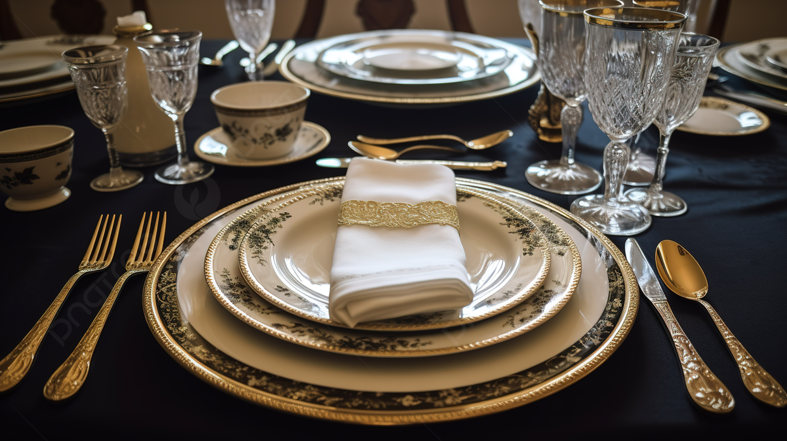
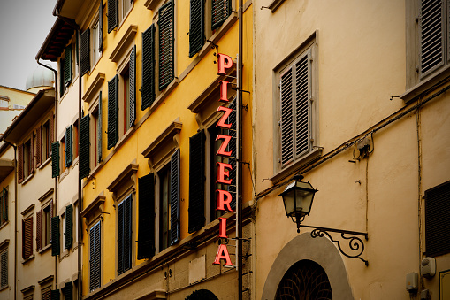
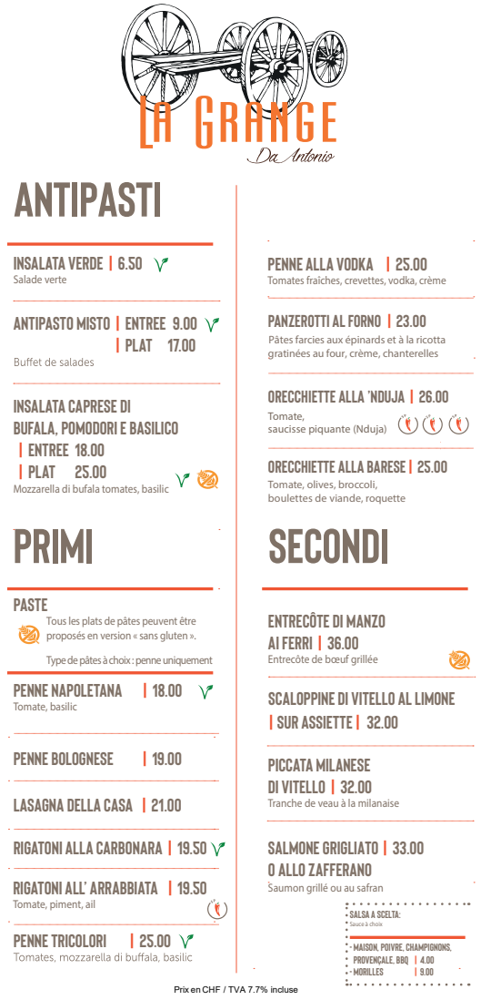
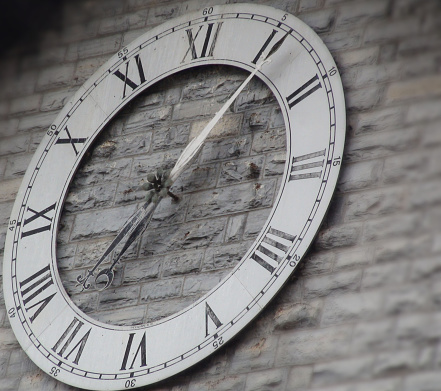

Etika Makan di Italia
Orang Italia menghargai waktu makan. Jangan terburu-buru, duduk dengan tenang, dan nikmati setiap hidangan. Hindari meminta keju di atas hidangan seafood — itu dianggap tidak sopan!

Tips Mencari Makanan Otentik
Hindari restoran dekat tempat wisata besar. Pilih tempat kecil yang ramai oleh warga lokal. Cek menu—semakin sedikit pilihannya, biasanya semakin autentik rasanya!

Kosakata Kuliner Dasar
- Antipasti - Makanan pembuka
- Primi - Hidangan pertama (biasanya pasta atau sup)
- Secondi - Hidangan utama (daging atau ikan)
- Dolci - Makanan penutup

Waktu Makan Khas
Restoran biasanya buka untuk makan siang pukul 12:30–14:30 dan makan malam pukul 19:30–22:00. Jangan heran jika banyak restoran tutup di luar jam ini.